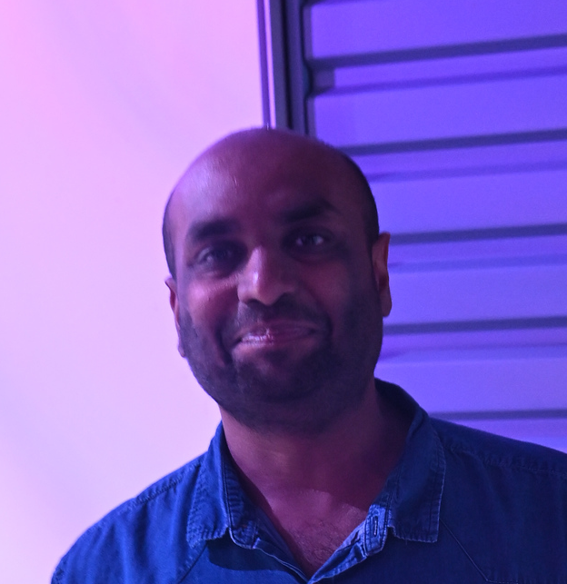
Otkrist Gupta
I lead research and development at Lendbuzz, building deep learning systems for finance and computer vision — conversational agents, underwriting and risk scoring, document parsing, and fraud detection — along with the AutoML and MLOps platforms behind them.
I earned my Ph.D. at the MIT Media Lab, where my research centered on deep learning, neural architecture search, and privacy-preserving machine learning. I co-created MetaQNN, one of the first methods to design neural-network architectures automatically with reinforcement learning, and invented Split Learning, a technique for training deep networks across institutions without ever sharing raw data. My earlier work reconstructed 3D scenes hidden around corners, published in Nature Communications.
Before MIT, I built speech and voice systems at Google and search infrastructure at LinkedIn, and spent a year in high-frequency trading at Tower Research Capital. I hold a bachelor's in Computer Science from IIT Delhi, where I graduated first in my class.
Selected Work
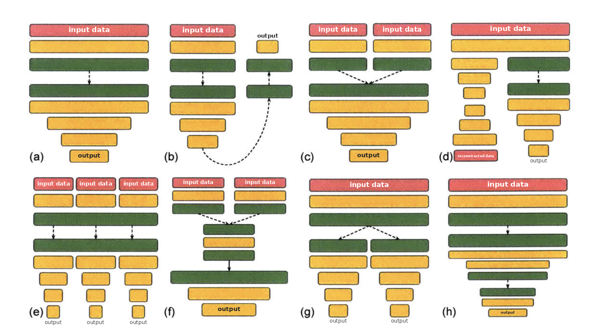
Split Learning
Distributed deep learning without sharing raw data. A neural network is split at a cut layer — clients train the lower layers on their own data and send only intermediate activations to a server holding the rest — enabling institutions to collaboratively train on sensitive records (e.g. patient data) that never leave their premises. See the MIT Thesis, the paper, and Split Learning for Health.
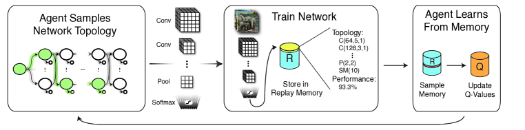
Neural Architecture Search with Reinforcement Learning
MetaQNN — a reinforcement-learning agent that automatically designs high-performing convolutional network architectures, learning to assemble layers via Q-learning. An early landmark in neural architecture search. Presented at the International Conference on Learning Representations (ICLR), 2017; a follow-up accelerates the search with early performance prediction.

Conversational Agents
Building conversational agents in production. With the Google Search NLP team I developed speech infrastructure and home-action voice commands such as What’s on my Chromecast?, featured at Google I/O 2014. At Lendbuzz, I build voice agents for call-center collections that have handled millions of minutes of calls and recovered several million dollars.
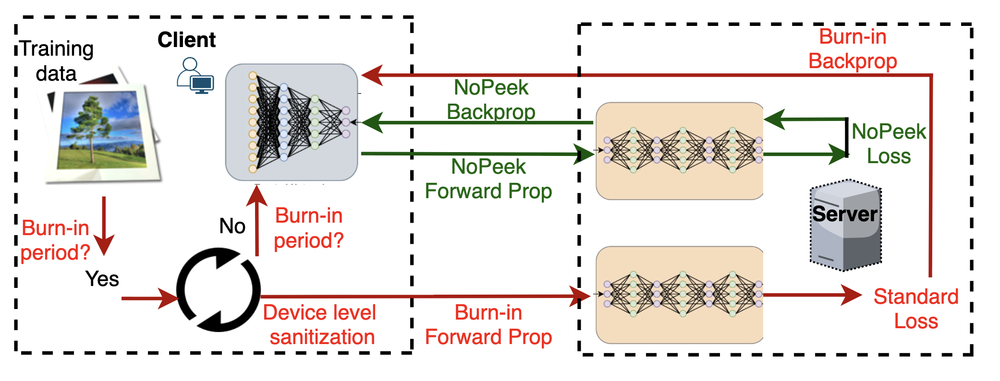
NoPeek: Preventing Data Leakage in Distributed Learning
Stopping raw data from leaking through shared activations. NoPeek adds a distance-correlation loss that scrubs sensitive information out of the intermediate features exchanged during distributed training — so an adversary who intercepts them cannot reconstruct the original input, such as a face. See NoPeek (ICDMW 2020); a follow-up, NoPeek-Infer (IEEE FG 2021), extends it to inference, and the same approach reduces leakage for sensitive health data.
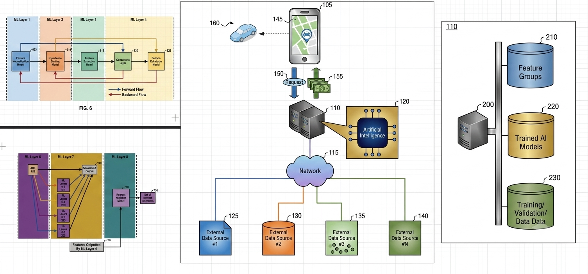
Financial Scoring and Automated Underwriting
Specialized AI architectures for underwriting — predicting whether a borrower will meet a financial obligation by processing unstructured transaction and behavioral data through stacked machine-learning layers. See the patent (US 12,175,381). Uses machine learning and reinforcement-learning agents to automate custom underwriting workflows.
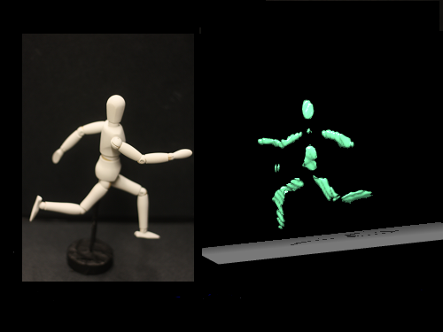
Looking Around Corners
Algorithms that reconstruct scenes hidden from direct line of sight, using the faint timing of scattered light to see around corners. Published in Nature Communications. Related work reconstructs hidden shapes from diffuse reflections and classifies objects hidden behind scattering media.
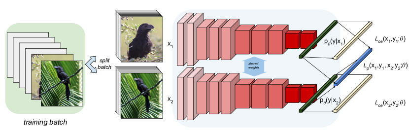
Fine-Grained Visual Classification
Telling apart categories that look almost identical — bird species, car models — by regularizing what the network learns. Pairwise Confusion pulls the predictions of image pairs together to curb overfitting, while a maximum-entropy method keeps predictions from becoming over-confident. See Pairwise Confusion (ECCV 2018) and Maximum-Entropy (NeurIPS 2018).
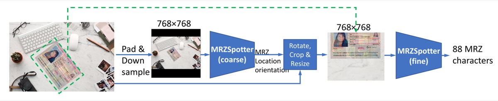
Document Intelligence
Reading and verifying identity documents. MRZNet locates and reads the machine-readable zone on passports and visas at any orientation and scale; companion work detects tampering by modeling a document as a graph of its text elements. See MRZ extraction (IJDAR) and manipulation detection (ICPRAI 2022).
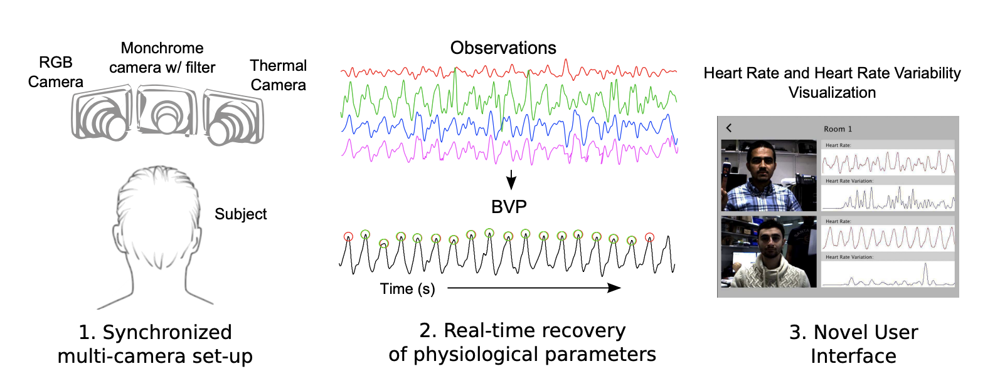
Real-Time Physiological Measurement
Measuring heart rate and heart-rate variability remotely and in real time, fusing RGB, monochrome, and thermal cameras to recover the blood-volume pulse with live visualization. Presented at CVPR, 2016.
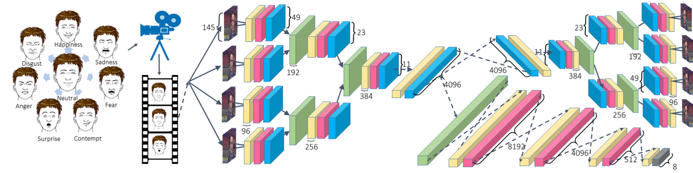
Facial Expression Recognition
Recognizing expressions in video by processing multiple temporal “velocities” in parallel, so the model adapts to both fast and slow motion; related work adds robustness to lighting via illumination-invariant representations. See Multi-Velocity Networks (IEEE TAC) and illumination invariants (Pattern Recognition).
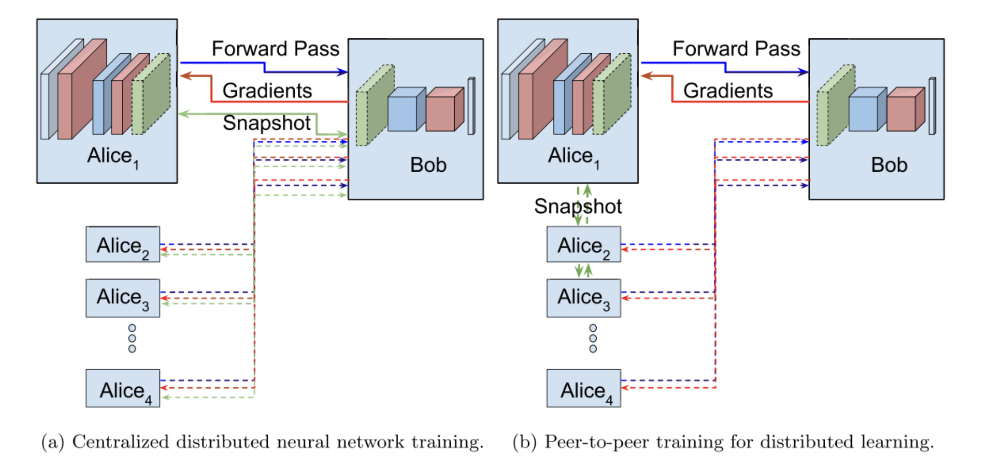
Secure Multi-Party Training
A split neural network lets multiple data owners collaboratively train a shared model on a server without ever exposing their raw private data; a companion study compares its communication efficiency against federated learning. See the patents US 10,755,172 and US 11,669,737.
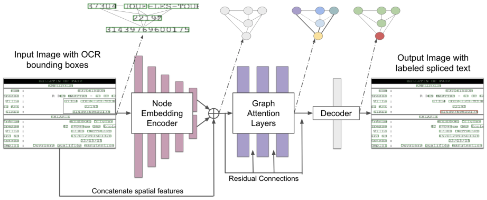
OCR Graph Features for Forgery Detection
Detecting forged text in documents by building a per-character graph of OCR bounding-box geometry and classifying it for tampering — pixel edits, copy-move, and splicing. See the paper (2020) and patent (US 12,020,176).
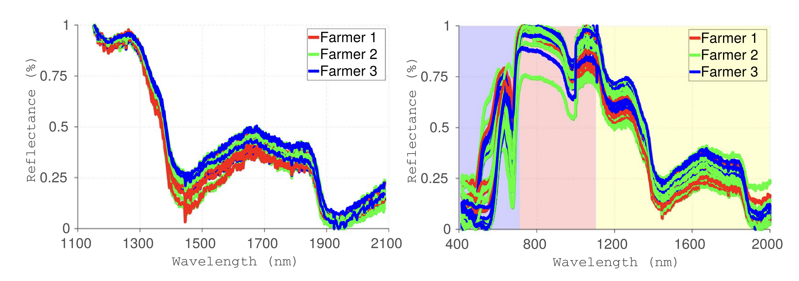
Machine Learning for Health & Agriculture
Applying machine learning to real-world screening and classification: pixel-wise screening of gum disease from intraoral photos (IEEE HI-POCT 2017), near-infrared classification of produce by type and grower across 75,000+ samples (Nature Scientific Reports 2018), and smartphone-based point-of-care exams — ECG, ophthalmoscope, otoscope, and gait — at population scale (BMJ Open 2018).
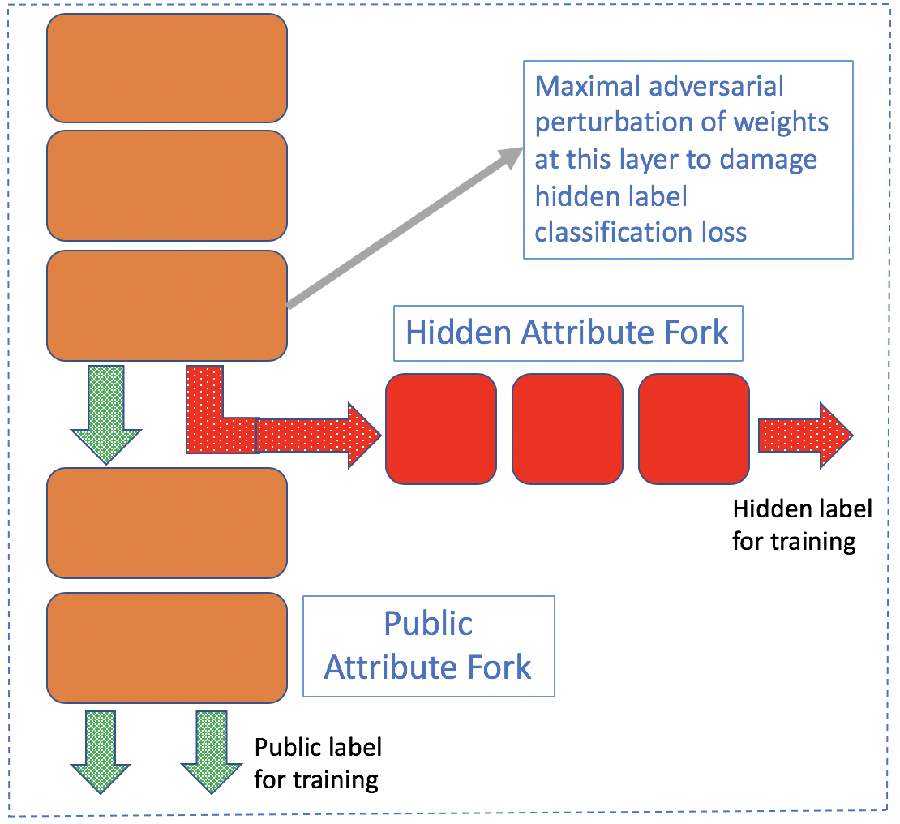
Adversarial Attribute Obfuscation
Adversarial perturbations that erase a sensitive attribute from an image while keeping the useful, public attribute intact. See the paper (2019).
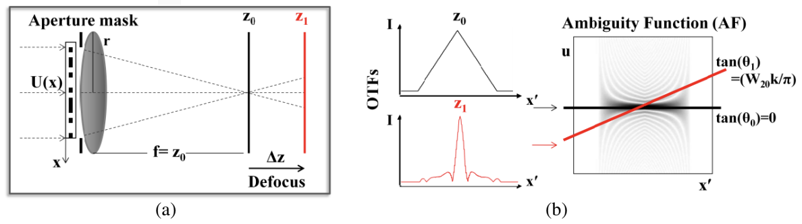
Depth-Variant PSF Design
An optics framework using partially coherent ambiguity functions to design point-spread functions that vary controllably with depth. Presented at PIERS, 2011.
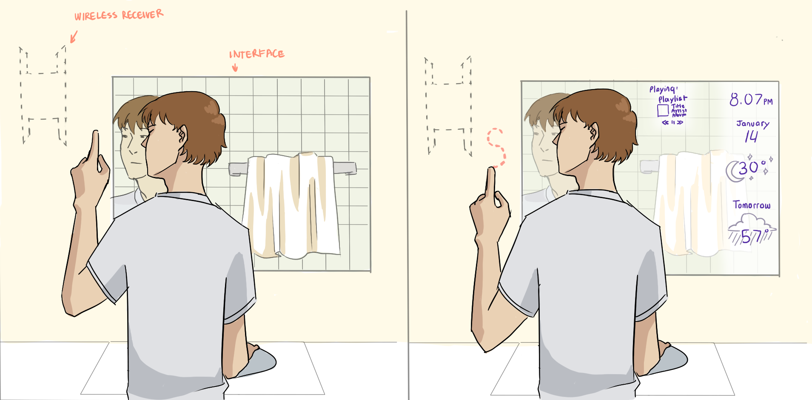
Rflow: Interaction Beyond Walls
A radio-frequency sensor that tracks a moving hand through drywall to within centimeters — enabling camera-free interaction through occluders. Presented at UIST, 2015.
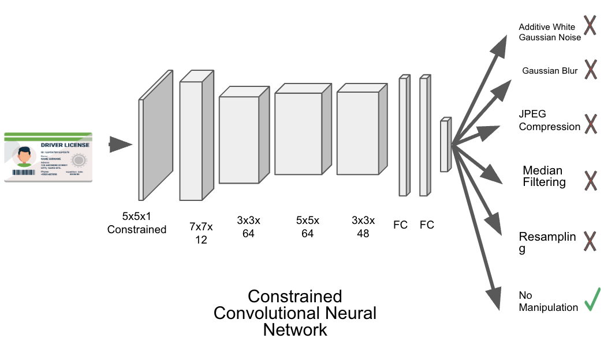
Determining Image Authenticity
A CNN with a constrained convolutional layer that detects manipulation fingerprints — such as print-and-scan attacks — to judge whether an image is authentic. See the patents US 12,118,702 and US 11,875,494.
Talks & Media
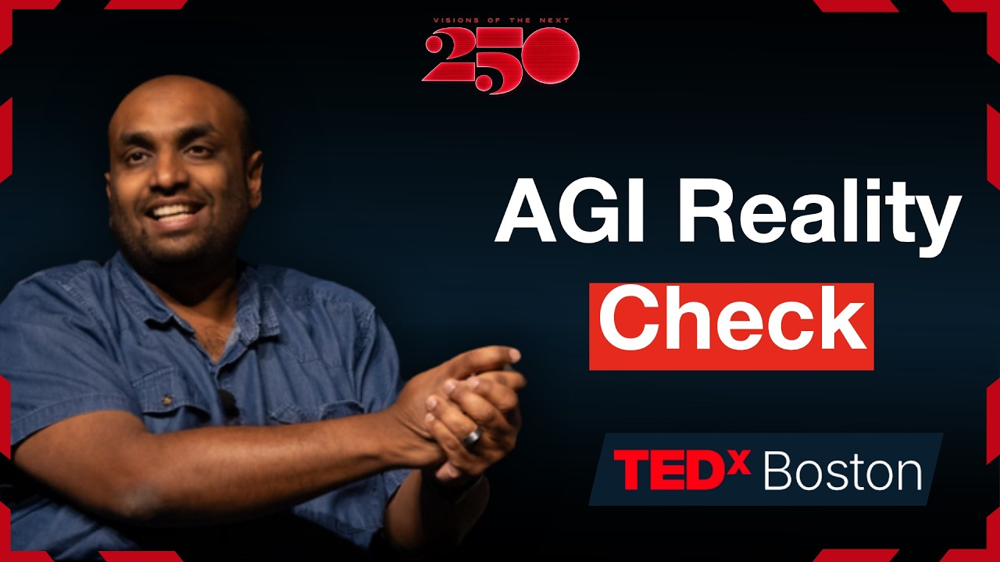
The Truth About AGI
How today’s models really compare to human intelligence, and where the path to AGI actually stands.
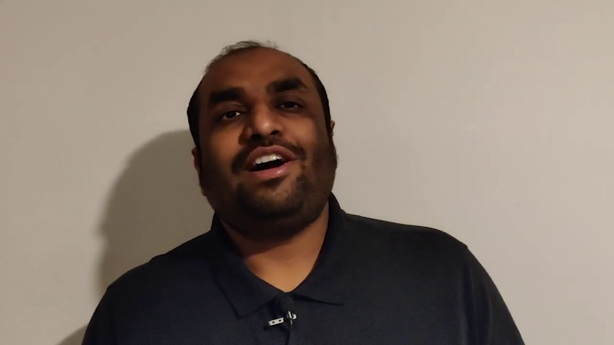
MetaAI: Artificial Intelligence That Can Engineer Itself
What happens when AI systems begin designing their own architectures — the ideas behind MetaQNN, for a general audience.
Podcasts & Interviews
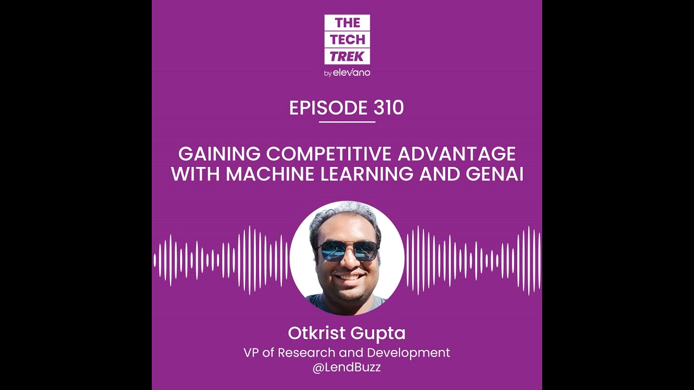
Gaining Competitive Advantage with Machine Learning and GenAI
How Lendbuzz uses machine learning and generative AI to build a competitive edge in lending.
AI in Action, Episode 265
Using machine learning and LLMs to rethink credit and underwriting at Lendbuzz.
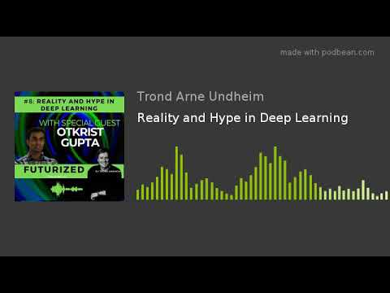
Reality and Hype in Deep Learning
A candid look at what deep learning can and can’t do — explainability, generalization, and data efficiency.